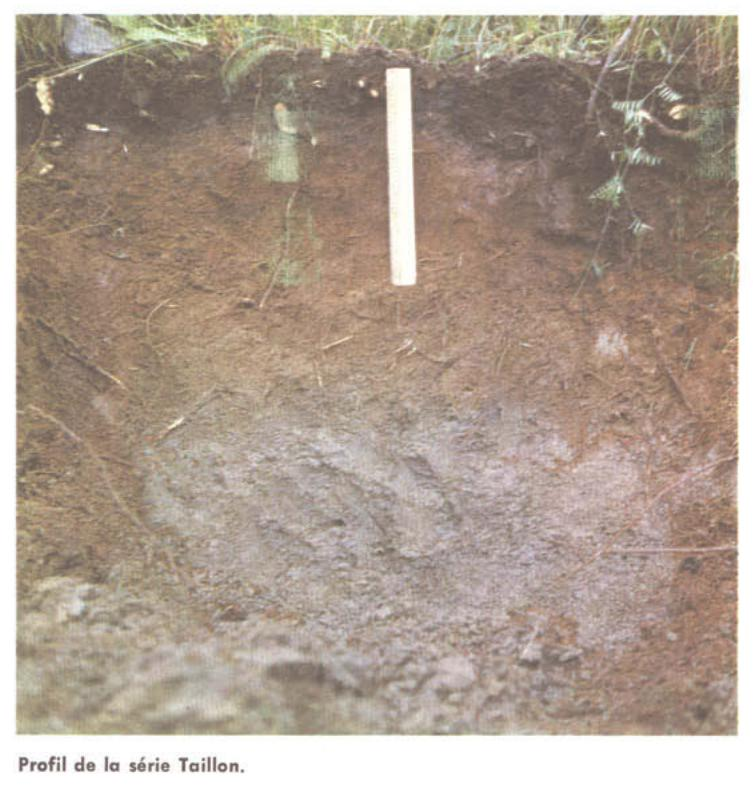

Identification & Caractéristiques Générales
La série Taillon provient d'un dépôt superficiel de limons jaunes ou brunâtres d'épaisseur variable, généralement comprise entre 15 et 60 centimètres, recouvrant et s'incorporant aux argiles lacustres ou marines sous-jacentes. Ce matériau éolien ou fluvio-lacustre s'étale en larges nappes formant des modelés de surface vallonnés à ondulés au sein des plaines basses régionales. La topographie présente des pentes régulières favorisant le ruissellement de surface et induisant une forte susceptibilité à l'érosion hydrique, particulièrement en contexte de mise en culture intensive.
Sur le plan morphologique, le profil se caractérise par un drainage naturel bon à modéré, s'inscrivant comme le membre le mieux drainé de sa caténa. Le sol montre une différenciation typique des milieux acides, avec la présence d'un horizon supérieur limoneux à loameux, acide et brun, pouvant présenter un faible degré d'éluviation, tandis que les phases plus sableuses amorcent une évolution vers le sous-groupe podzolique. La perméabilité est modérée dans le dépôt limoneux de surface mais se trouve restreinte en profondeur par le contact avec le substrat argileux sous-jacent compact. La réaction du sol est fortement acide, nécessitant des apports calciques réguliers pour optimiser la fertilité chimique.
Sur le plan agronomique, la série Taillon convient aux cultures générales de la ferme ainsi qu'aux cultures fourragères et céréalières. La texture limoneuse de surface permet d'atténuer la compacité et la plasticité excessive des sous-sols argileux lors des labours, tout en assurant une bonne réactivité aux fertilisants organiques et minéraux. Toutefois, les limitations majeures résident dans sa vulnérabilité élevée à l'érosion pluviale et éolienne. L'exploitation agricole de ce sol exige la mise en place de pratiques de conservation rigoureuses, telles que le travail du sol selon les courbes de niveau, la mise en cultures intercalaires ou en bandes, l'établissement de rotations incluant des prairies permanentes, ainsi qu'un chaulage correctif pour contrer l'acidité naturelle.
Caractères Distinctifs & Morphologie Génétique (Comté de Chicoutimi — Page 41)
- Topographie : vallonnée à ondulée
- Drainage : bon
- Grand-groupe génétique : brun acide boisé*
- Degré d'érosion : modéré à très sévère (W2-W4)
- Classe d'utilisation : 3 (2)
- Association géographique : séries Alma, Larouche, Chicoutimi, etc.
- Végétation naturelle : bouleaux, sapins, épinettes, coudriers, trembles, érables, fraisiers sauvages, jargeau, asters, etc.
Classification Taxonomique & Environnement Pédologique
| Ordre Pédologique | Brunisolique |
|---|---|
| Grand Groupe (SCSS) | Brunisol dystrique |
| Sous-Groupe Taxonomique | Brunisol dystrique orthique |
| Famille Pédologique | Limoneuse-fine, mixte sableux, acide |
| Mode de Dépôt Parental | Lacustre sur marin |
| Classe de Drainage Naturel | Bien drainé |
| Régime Thermique & Humidité | Frais / Subhumide |
Description Morphologique du Profil Type
Séquences génétiques des horizons pédologiques caractérisant le profil type représentatif de la série Taillon :
Profil cultivé (agricole) — Comté de Charlevoix
✓ Source : Comté de Charlevoix — Page 45Couleur Munsell : 10YR 4/3
Structure & Consistance : Polyédrique à granulaire
Description morphologique : Loam brun foncé (10 YR 4/3 h); granulaire, modérée, fine; friable; racines abondantes; limite abrupte, régulière; moyennement acide.
Couleur Munsell : 10YR 5/6
Structure & Consistance : Polyédrique à granulaire
Description morphologique : Loam brun-jaune (10 YR 5/6 h); granulaire, faible, fine; très friable; limite distincte, régulière; faiblement acide.
Couleur Munsell : 10YR 5/4
Structure & Consistance : Polyédrique à granulaire
Description morphologique : Loam brun-jaune (10 YR 5/4 h); marbrures peu nombreuses, petites, faibles; granulaire, faible, fine; très friable; limite distincte, régulière; faiblement acide.
Couleur Munsell : 10YR 5/2
Structure & Consistance : Polyédrique à granulaire
Description morphologique : Loam limoneux brun-gris (10 YR 5/2 h); marbrures peu nombreuses, petites, faibles; granulaire, faible, grossière; très friable; faiblement acide.
Profil représentatif — Comté de Chicoutimi — Phase sableuse du
✓ Source : Comté de Chicoutimi — Page 41Couleur Munsell : 10YR 4/4
Structure & Consistance : Polyédrique à granulaire
Description morphologique : Loam sableux brun jaune foncé (10YR 4/4); pH : 6.1.
Couleur Munsell : 10YR 5/6
Structure & Consistance : Polyédrique à granulaire
Description morphologique : Loam brun jaune (10YR 5/6); petits nodules argileux; pH : 6.3.
Couleur Munsell : 10YR 5/4
Structure & Consistance : Polyédrique à granulaire
Description morphologique : Loam brun jaune (10YR 5/4); petits nodules argileux; pH : 6.3.
Couleur Munsell : 2.5Y 5/4
Structure & Consistance : Grumeleuse
Description morphologique : Loam olive clair (2.5Y 5/4) avec plus de nodules argileux que dans les horizons précédents; structure grumeleuse; pH : 6.3.
Couleur Munsell : 5Y 5/3
Structure & Consistance : Mietteuse se débitant en petits grumeaux
Description morphologique : Loam argileux olive (5Y 5/3); structure mietteuse se débitant en petits grumeaux; pH : 6.3.
Couleur Munsell : 5Y 5/2, 5Y 5/4
Structure & Consistance : Polyédrique devenant cubique (1/4 à 1″ de côté-1 à 2
Description morphologique : Argile gris olive (5Y 5/2); structure polyédrique devenant cubique (1/4 à 1″ de côté-1 à 2.5 cm) avec la profondeur; plans des agrégats partiellement altérés et de couleur olive (5Y 5/4); pH : 6.5.
Profil représentatif — Pédologie de la région du Lac-Sa
✓ Source : Pédologie de la région du Lac-Sa — Page 57Couleur Munsell : Non précisée
Structure & Consistance : Polyédrique à granulaire
Description morphologique : Mince couche de débris végétaux (feuilles, aiguilles, brindilles); couche humique, friable; mêlée à des débris calcinés; pH: 5.0.
Couleur Munsell : 10YR 6/2
Structure & Consistance : Polyédrique à granulaire
Description morphologique : Loam limoneux gris-brun clair (10YR 6/2); friable; en ruban étroit et sinueux; pH: 5.5.
Couleur Munsell : 5YR 4/4
Structure & Consistance : Polyédrique à granulaire
Description morphologique : Loam limoneux brun-rouge (5YR 4/4) finement grumeleux, très friable, poreux; renferme de nombreux petits nodules ou concrétions de 1 à 2 mm de diamètre, très fermes; pH: 5.4.
Couleur Munsell : 10YR 5/4
Structure & Consistance : Polyédrique à granulaire
Description morphologique : Loam limoneux brun-jaune (10YR 5/4); finement grumeleux, très friable; pH: 5.3.
Couleur Munsell : 10YR 6/3
Structure & Consistance : Polyédrique à granulaire
Description morphologique : Loam limoneux brun pâle (10YR 6/3); grumeleux, assez friable, collant; pH: 5.6.
Couleur Munsell : 5Y 6/2
Structure & Consistance : Polyédrique
Description morphologique : Loam limono-argileux gris olive clair (5Y 6/2) à structure polyédrique; tendance à se débiter en plaquettes de 1 à 1½ mm; collant à l'état humide; pH: 5.3.
Profils Photographiques & Planches de Terrain
Documents iconographiques, figures pédologiques et coupes de terrain documentées dans les mémoires d'inventaire pour de la série Taillon :



Propriétés Physico-Chimiques & Analyses de Laboratoire
| Horizon | Prof. limite | pH (H₂O) | M.O. % | C tot. % | N tot. % | C.E.C. (cmol/kg) | Sable % | Limon % | Argile % | P Meh3 (mg/kg) | K (cmol/kg) | Ca (cmol/kg) | MVA (g/cm³) |
|---|---|---|---|---|---|---|---|---|---|---|---|---|---|
| Ap1 | 10.0 cm | 6.01 | 5.87 | 3.4 | 0.24 | 22.1 | 17.1 | 49.2 | 33.6 | 27.2 | 0.62 | 8.34 | 1.02 |
| Ap2 | 32.0 cm | 6.17 | 4.97 | 2.88 | 0.2 | 21.1 | 16.7 | 48.8 | 34.5 | 22.9 | 0.37 | 8.83 | 1.16 |
| B | — | 6.36 | 1.18 | 0.69 | 0.05 | 16.4 | 11.7 | 49.7 | 38.6 | 17.5 | 0.31 | 6.39 | 1.54 |
Particularités Régionales, Phases & Variantes Pédologiques
Déclinaisons régionales, faciès texturaux, phases d'érosion ou de pierrosité et variantes cartographiées par étude pour de la série Taillon :
| Étude Régionale | Symbole | Appellation / Phase / Variante | Différenciation avec la série type (Analyse pédologique) |
|---|---|---|---|
| Comté de Charlevoix | Tl |
Taillon loam | Modalité modale de référence (type de base de la série). |
| Comté de Chicoutimi | Tl |
Taillon loam | Conforme à la série type de référence (caractéristiques texturales et drainage identiques). |
Tl-s |
Taillon loam phase sableuse | Conforme à la série type de référence (caractéristiques texturales et drainage identiques). | |
| Pédologie de la région du Lac-Saint-Jean | Tl |
Taillon loam | Conforme à la série type de référence (caractéristiques texturales et drainage identiques). |
Distribution Pédo-Paysagère & Représentativité Cartographique (Couverture PPS 2026)
- Alma loam (ALM) — co-occurrente dans 621 polygone(s)
- Larouche loam argileux (LUH) — co-occurrente dans 261 polygone(s)
- Affleurements rocheux (ARR) — co-occurrente dans 249 polygone(s)
Aptitudes Agronomiques, Hydropédologie & Conservation des Sols
Indicateurs Hydropédologiques & Vulnérabilité à l'Érosion (BDHP 2026)
Interprétation BDHP : Potentiel de ruissellement modérément élevé. Faible taux d'infiltration, présence d'horizons ralentissant le drainage descendant.
Classement selon l'Inventaire des Terres du Canada (ITC / CLI) : Classe 1.
- Potentiel agricole : Terroir adapté aux cultures régionales selon la texture dominante et la régie de drainage.
- Contraintes majeures : Bien drainé. Risque d'engorgement temporaire ou d'excès d'eau printanier.
- Gestion & Aménagement : Drainage souterrain ou superficiel préconisé sur les terres planes. Chaulage et apport organique régulier selon les bilans agronomiques.
- Cultures adaptées : Grandes cultures (maïs, soya, céréales), prairies fourragères et cultures maraîchères selon le contexte géomorphologique.